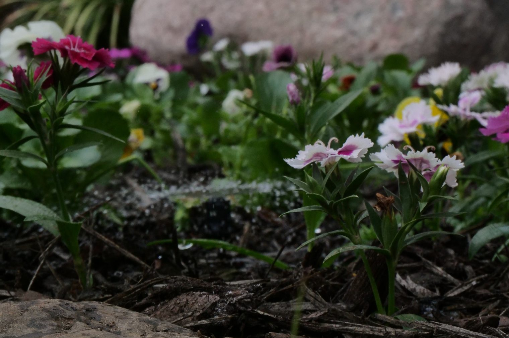
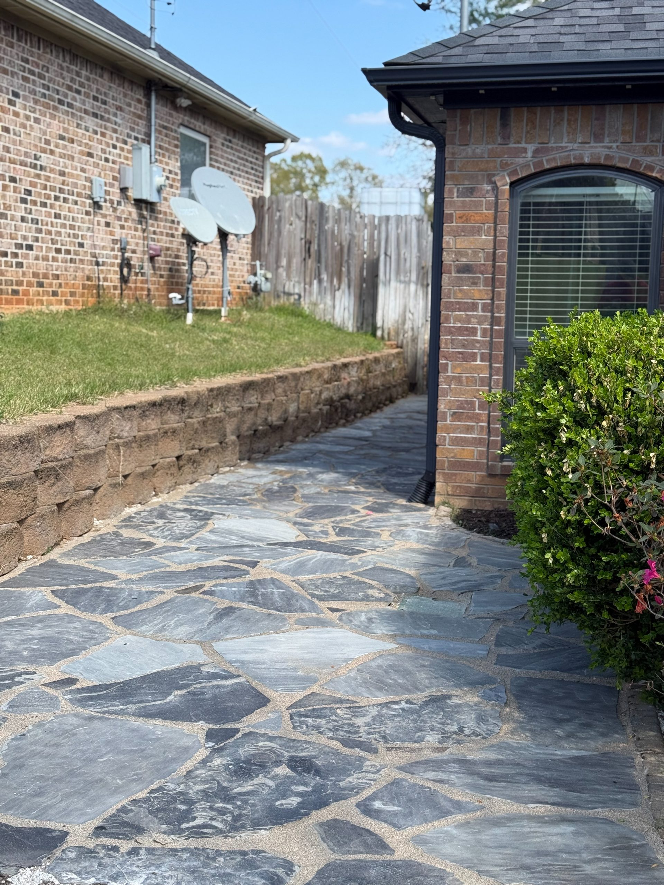

Tree & Shrub Care in Kilgore, TX
Professional tree and shrub care serving Kilgore and surrounding East Texas communities.
Get a Free Quote in KilgoreTrusted Tree & Shrub Care Company Serving Kilgore, TX
Yard Dog Landscapes is the tree and shrub care Kilgore TX homeowners trust to show up, do the work right, and treat the property like our own. We've been working yards across Gregg County since 2017, and Kilgore sits in our regular service area alongside Longview and White Oak. When you call us for tree and shrub care Kilgore Texas, you get a local crew, a written estimate, and the same standards on every visit.
Kilgore sits in the heart of East Texas, where hot summers, clay-heavy soil, and stretches of heavy spring rain shape what your yard actually needs. Late winter and early spring are the prime windows for major pruning on most East Texas ornamentals before bud break. Yard Dog Landscapes Kilgore clients get a service plan tuned to the local climate — not a one-size-fits-all script — because East Texas tree and shrub care only works when the schedule and the methods match the ground.
From routine tree and shrub care to bigger seasonal projects, our crew handles Kilgore properties of every size. We also serve nearby Longview, White Oak, and Henderson, plus the rest of Gregg County. Call (903) 844-6877 or request a free quote online — we walk every property in person before we send a price.
What's Included With Tree & Shrub Care in Kilgore
Tree & Shrub Care we've done around East Texas.



Why Kilgore Homeowners Choose Yard Dog Landscapes
Local crew, local knowledge
Familiar with East Texas soil, grass, and climate — because we work it every day.
Free on-site quotes within 24 hours
We walk the property in person and send a written, itemized estimate fast.
Licensed, insured, family-owned since 2017
Same crew, same standards, every visit. Fully licensed and insured.
Frequently Asked Questions
Do you offer tree and shrub care contracts in Kilgore, TX?
Yes. Yard Dog Landscapes is a family-owned company that's been serving Kilgore and the rest of Gregg County since 2017, and we offer flexible service agreements for tree and shrub care. Whether you want a one-time service or recurring work tied to the season, we'll write up a clear, itemized estimate and stick to it.
How often should I schedule tree and shrub care in Kilgore?
Most ornamental shrubs do well with two shapings per year, and shade trees benefit from a structural prune every two to three years. Every Kilgore property is a little different, so we'll walk yours and recommend a schedule that fits how the yard actually grows.
What areas near Kilgore do you serve?
Yard Dog Landscapes serves Kilgore, plus nearby Longview, White Oak, Henderson, and surrounding Gregg County communities. If you're not sure whether you're in our service area, give us a call at (903) 844-6877 — we cover most of East Texas.